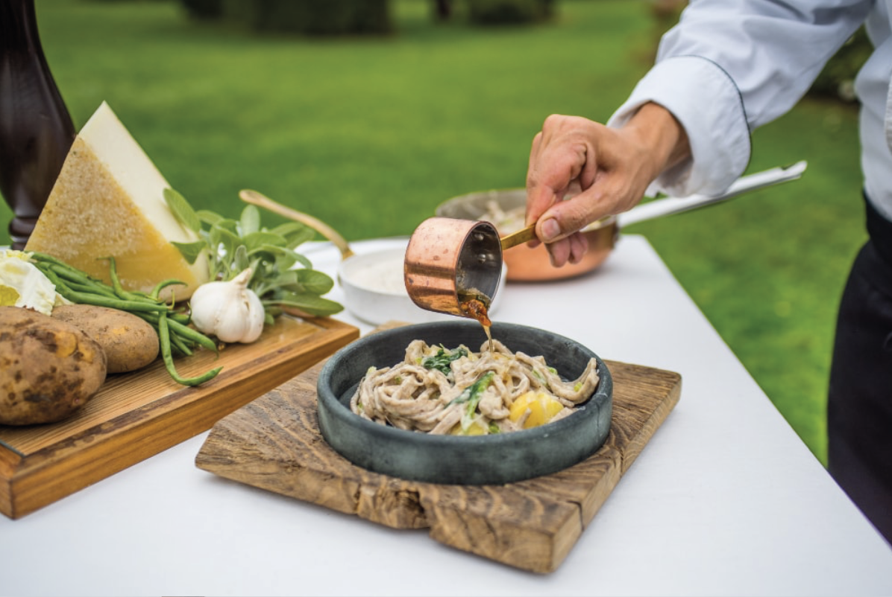

Among wines & food
The Valtellina is a land of traditional flavours; the country cuisine, as wholesome as the environment it comes from, offers food which is much appreciated by the most demanding palate. “Fraina”, or buckwheat flour, along with butter and alpine cheese and “bresaola” give the cuisine of Valtellina a strong identity, unique in the alpine range. These are the typical dishes: Pizzoccheri: rustic noodles made from buckwheat flour with vegetables, served with butter and alpine cheese. Sciatt: savoury bignet made from buckwheat flour and filled with cheese. Polenta taragna: made with buckwheat flour, butter and cheese. Rye bread.
Bresaola: it is the typical cured meat of Valtellina. The meat is beef salted using the “dry” method, that is adding salt to the meat and waiting for the salt solution to form from the meat juices, then dried in the air. It has a sweet, soft flavour and delicate taste; best eaten as it comes. Salami and Ham.

Cheese: Casera, Scimudin and Bitto. Bitto, that is recognised as the king among the different types of cheese produced in Valtellina dairies, bears the DOP protected origin label. It is a rich alpine cheese with a semi-cooked body, medium hard and average maturation, sweet and delicate to taste which tends to become lively with age; when young it is an excellent table cheese while after a year’s ageing it becomes a fine dressing and grating cheese. Game. Porcini mushrooms. Bisciöla: a rustic cake with nuts, figs and raisins which is served either as it is or with a vanilla sauce or one made of Braulio, renowned liqueur of Bormio. Wines of Valtellina: Sassella, Grumello, Inferno, Valgella, Valtellina e Sforzato. Grappas and Alpine Herb Liqueurs (Braulio, Taneda).